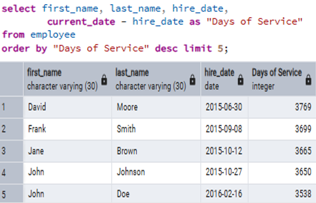
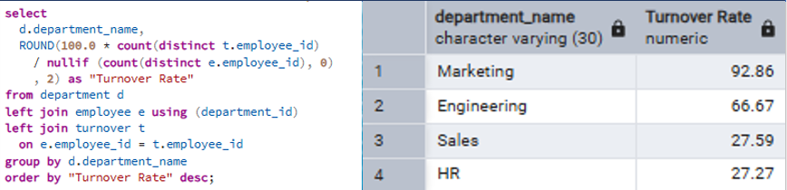
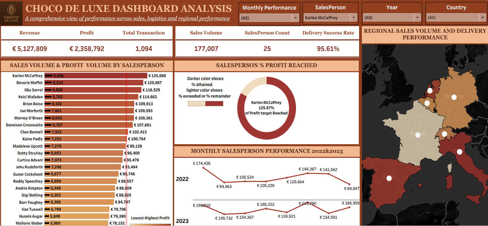
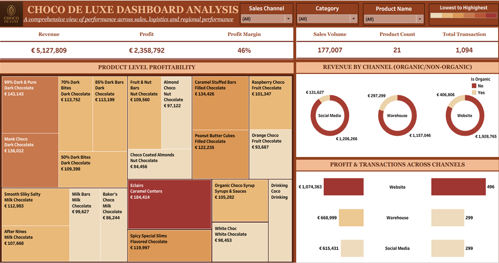
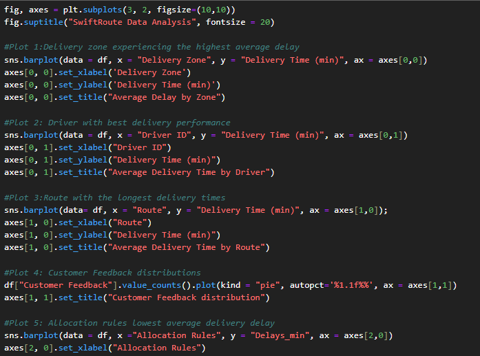
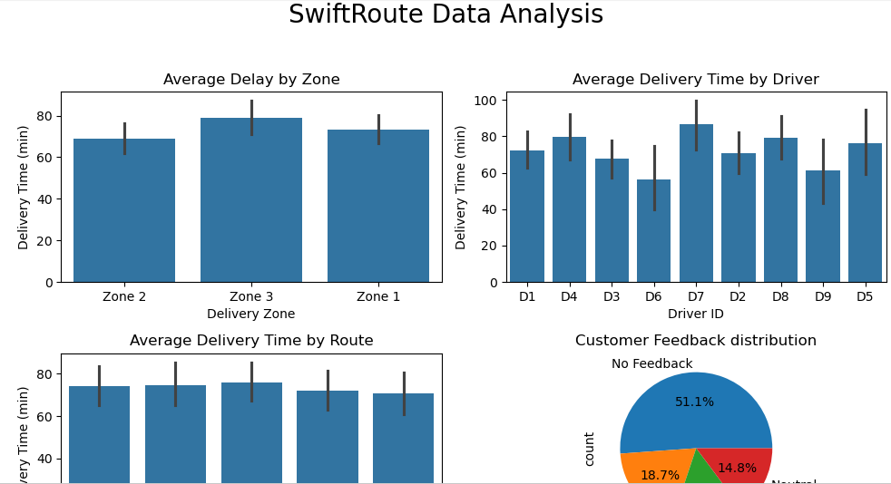

Excel
Data manipulation and cleaning, Analysis, Formula writing (e.g.VLOOKUP, INDEX/MATCH, IF statements), Pivot tables and data summarization, Chart creation and visualization, Data validation and formatting, Advanced functions (e.g., XLOOKUP)
Data manipulation and cleaning, Analysis, Formula writing (e.g.VLOOKUP, INDEX/MATCH, IF statements), Pivot tables and data summarization, Chart creation and visualization, Data validation and formatting, Advanced functions (e.g., XLOOKUP)

Data modeling and data warehousing, Data visualization (reports, dashboards, charts), DAX formula writing (calculated columns, measures), Data transformation and cleaning, Connecting to various data sources, Web Scraping Creating interactive reports and dashboards.
Writing SQL queries (SELECT, JOIN, subqueries), Data manipulation (INSERT, UPDATE, DELETE), Data aggregation and grouping, Data filtering and sorting, Joining and merging datasets, Creating and managing database objects (tables, views).
Data visualization, dashboard development, data cleaning and preparation, calculated fields and parameters, interactive reporting, KPI monitoring, trend analysis, forecasting, geographic mapping, and data storytelling for business decision-making.
Data cleaning, preprocessing and transformation, exploratory data analysis (EDA), data visualization, statistical analysis, automation, web scraping, API integration, predictive analytics, machine learning fundamentals, and business insight generation using Pandas, NumPy, Matplotlib, and Seaborn.

Data storytelling, Presentation skills, Teamwork, problem- solving, collaboration, interpersonal skills and stakeholder engagement.

Transformed messy, error-prone regional service data into a clean, structured dataset using advanced Excel functions (XLOOKUP, IF, SUBSTITUTE, etc.). Eliminated inconsistencies and missing values, preparing the data for migration to a centralized analytics platform. Improved data accuracy by 45%, enabled effortless creation of pivot tables and dashboards, and enhanced business reporting for faster, more reliable decision-making


Cleaned and standardized multi-year sales, customer, inventory, and employee data using advanced Excel functions (XLOOKUP, INDEX-MATCH, SUMIFS, PivotTables). Built interactive dashboards to track top products, customer segments, seasonal trends, and staff performance. Revealed muffins and cappuccinos as bestsellers, young adults as the highest-spending demographic, and key gaps in inventory and staffing. Delivered actionable insights that improved demand forecasting, enabled targeted promotions, and guided employee incentive programs, streamlining operations and driving sustained revenue growth.


Cleaned and standardized a multi-year retail dataset with demographics, product categories, and regional sales using advanced Excel functions, pivot tables, and calculated fields. Built an interactive dashboard with drill-down capabilities by region, customer segment, and product line. Automated reporting, reducing manual effort by 60%, uncovered profit and loss trends, and delivered actionable insights into customer behavior and sales performance, empowering stakeholders with faster, data-driven decisions.


Designed a fully interactive Power BI dashboard with advanced data modeling and dynamic visualizations to answer critical business questions. Delivered real-time insights into sales performance, customer purchasing behavior, and product trends. Enabled the boutique to identify top-selling items, forecast demand with greater accuracy, and refine customer engagement strategies. Streamlined reporting and empowered leadership with data-driven decisions—boosting efficiency, improving customer retention, and driving sustained revenue growth.


Transformed raw flat-file data into a structured relational model to enable scalable analysis. Designed and developed an interactive Power BI dashboard with DAX calculations and dynamic visuals to track business performance. Improved data processing speed by 50%, enhanced reporting consistency by 35%, and increased stakeholder adoption of self-service analytics by 70%. The solution delivered real-time insights that streamlined operations and strengthened data-driven decision-making.


Consolidated siloed regional sales spreadsheets into a centralized Power BI solution. Built an automated, interactive dashboard that updates in real time with new retail data from partners like Costco, Walgreens, Target, and Walmart. Reduced reporting time by 60%, improved data accuracy by 40%, and empowered executives with on-demand insights that accelerated data-driven decision-making across the organization.


Restored and analyzed employee data from a relational database using SQL to uncover trends in retention, turnover, performance, and compensation. Wrote advanced queries to conduct retention, performance, and compensation analyses, revealing a 93% turnover rate in the Marketing department, identifying employees at risk of attrition, and evaluating salary-to-performance alignment across departments. Presented findings and recommendations that enabled leadership to make informed decisions on talent retention, employee development, and compensation strategy.


Developed an interactive Tableau dashboard to analyze sales, product, channel, and delivery performance across European markets. Leveraged data visualization and exploratory analysis to identify Website-generated profit, delivery success, and top-performing markets. Generated strategic recommendations that improved visibility into profitability, market performance, and operational efficiency, enabling stakeholders to make informed business decisions.



Developed a Python-based analytics solution to evaluate delivery performance, customer satisfaction, and operational efficiency for a logistics company. Performed data cleaning, transformation, and exploratory analysis using Pandas, Matplotlib and seaborn to identify the highest-delay delivery zone, best-performing driver, longest delivery route, and the allocation rule associated with the lowest average delay. Analyzed customer feedback patterns to uncover service quality trends and produced actionable recommendations that supported faster deliveries, optimized driver allocation, and improved customer experience by 35%.